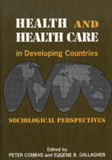

Sociological perspecitves are applied to medical issues
Sociological perspecitves are applied to medical issues


 Sociological perspecitves are applied to medical issues
Sociological perspecitves are applied to medical issues

|  |
Health and Health Care In Developing CountriesSociological Perspectivesedited by Peter Conrad and Eugene B. Gallaghercloth EAN: 978-1-56639-027-9 (ISBN: 1-56639-027-3) |
"We really need a good resource that highlights Third World health systems, and this book does it. Its contribution is unique: I know of no other book like it in focus or scope."
—Andrew C. Twaddle, Professor of Sociology, University of Missouri-Columbia
In this seminal collection of articles on health care in the Third World, sociological perspectives are applied to medical issues in revealing ways. Fourteen essays (all but two of which are original to this volume) examine the social production of health, disease, and systems of care throughout the developing world. The volume covers a range of areas—central Africa, Nigeria, Singapore, Taiwan, Indonesia, Nepal, China, United Arab Emirates, Oman, and Mexico—and a broad scope of topics, from emergency care, the AIDS epidemic, and women's health care, to public health programs and national health care policies.
Contributors address the central question of whether health systems in developing areas should emphasize the role of clinical medicine and individual physicians or community and preventive medical resources. The major health problems faced by these societies—inadequate sanitation, infectious disease, high infant-child mortality, and a lack of family planning—indicate the greater need for health educators and public health workers despite many poor nations' desire for Western doctors. Other topics that are examined include the process of seeking medical aid; the relationship between traditional and modern medicines; medical education, hospital care, and communication between doctors and patients in developing countries; and the relevance and application of sociology in Third World settings.
This volume seeks to draw attention to the significance of medical sociology for understanding Third World health problems and to show how examining developing societies may necessitate reframing or modifying some Western sociological notions. In addition, these essays stretch the boundaries of medical sociology to include Third World issues.
Introduction – Peter Conrad and Eugene B. Gallagher
Part I: the Social Production of Disease
1. The Social Epidemiology of AIDS in Africa: Migrant Labor and Sexually Transmitted Disease – Charles W. Hunt
2. Women and Work in Rural Taiwan: Building a Contextual Model Linking Employment and Health – Rita S. Gallin
Part II: Seeking Medical Care
3. Urgency and Utilization of Emergency Medical Services in Urban Indonesia: A Report and Reflection – Peter Conrad
4. Ethnicity, Health Behavior, and Modernization: The Case of Singapore – Stella R. Quah
Part III: Traditional and Modern Medicines
5. The Contribution of Modern Medicine in a Traditional System: The Case of Nepal – Janardan Subedi and Sree Subedi
6. Traditional Medicine in Africa: Past, Present, and Future – Collins O. Airhihenbuwa and Ira E. Harrison
Part IV: Modern Medicine in Developing Societies
7. Curricular Goals and Student Aspirations in a New Arab Medial College – Eugene B. Gallagher
8. Family Care Work and Duty in a "Modern" Chinese Hospital – Joseph W. Schneider
9. A Comparative Analysis of the Culture of Biomedicine: Disclosure and Consequences for Treatment in the Practice of Oncology – Mary-Jo DelVecchio Good, Linda Hunt, Tsunetsugu Munakata, and Yasuki Kobayashi
Part V: Sociopolitics of Health Care
10. Constraints on Successful Public Health Programs: A View from a Mexican Community – Kenyon Rainier Stebbins
11. Implementing Health for All in Nigeria: Problems and Constraints – S. Ogoh Alubo
Part VI: Applying Social-Science Knowledge in Health Settings
12. Home and Hospital Birthing in Oman: An Observational Study with Recommendations for Hospital Practice – Carol J. Pierce Colfer and Eugene B. Gallagher
13. Strategies for Connecting Social-Science Research to Actions for Better Health – Sally E. Findley
14. Modernization and Medical Care – Eugene B. Gallagher
About the Contributors
Index
Peter Conrad is Professor of Sociology at Brandeis University and the co-author (with Joseph W. Schneider) of Deviance and Medicalization (Temple) and Having Epilepsy (Temple).
Eugene B. Gallagher is Professor of Medical Sociology at the University of Kentucky.
Health and Health Policy
Sociology
African Studies
© 2015 Temple University. All Rights Reserved. This page: http://www.temple.edu/tempress/titles/1058_reg.html.